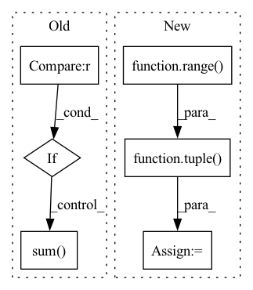

Pattern ID :5436

Before Change
Returns:
float: The :math:`R^2`.
if mask is None:
return 1. - torch.square(y_hat - y).sum() / (torch.square(y.mean(dim=0) - y).sum())
else:
if mask.dtype != torch.bool:
mask = mask.to(torch.bool)
return 1. - torch.square(y_hat[mask] - y[mask]).sum() / (torch.square(y[mask].mean(dim=0) - y[mask]).sum())
// TODO align with others
After Change
// compute mean(s) of target data
if mean_axis is None:
mean_axis = tuple(range(y.dim()))
mean_val = torch.mean(y, dim=mean_axis, keepdims=True)
variance = mse(mean_val, y, mask, reduction, nan_to_zero)
return 1. - (mse_ / variance)
In pattern: SUPERPATTERN
Frequency: 3
Non-data size: 6
Instances
Fragment ID: 19235396
Project Name: torchspatiotemporal/tsl
Commit Name: 4ab8a82b585611b1fb1662b5274beb705c89e907
Time: 2022-11-17
Author: stefano.imoscopi@usi.ch
File Name: tsl/metrics/torch/functional.py
M Class Name: AnonimousClass
N Class Name: AnonimousClass
M Method Name: r2(6)
N Method Name: r2(3)
M Parent Class:
N Parent Class:
M File Name: tsl/metrics/torch/functional.py
N File Name: tsl/metrics/torch/functional.py
M Start Line: 283
M End Line: 311
N Start Line: 282
N End Line: 324
'>
Before Change
if n_dims == 3:
if self.reduction == "mean":
loss = loss.mean(dim=1)
elif self.reduction == "sum":
loss = loss.sum(dim=1)
elif n_dims == 4:
if self.reduction == "mean":
loss = loss.mean(dim=(1, 2))
elif self.reduction == "sum":
After Change
reduction_dim = self.reduction_dim
else:
n_dims = loss.dim()
reduction_dim = tuple(range(1, n_dims))
if self.reduction == "mean":
loss = loss.mean(dim=reduction_dim)
elif self.reduction == "sum":
'>
Fragment ID: 19235393
Project Name: tky823/dnn-based_source_separation
Commit Name: 1d2af1cc37903a67df12b7cd28506a68f176cbc3
Time: 2021-10-29
Author: delta9guitar97@gmail.com
File Name: src/criterion/sdr.py
M Class Name: WeightedSDR
N Class Name: WeightedSDR
M Method Name: forward(4)
N Method Name: forward(4)
M Parent Class: nn.Module
N Parent Class: nn.Module
M File Name: src/criterion/sdr.py
N File Name: src/criterion/sdr.py
M Start Line: 280
M End Line: 298
N Start Line: 283
N End Line: 295
'>
Before Change
if n_dims == 3:
if self.reduction == "mean":
loss = loss.mean(dim=1)
elif self.reduction == "sum":
loss = loss.sum(dim=1)
elif n_dims == 4:
if self.reduction == "mean":
loss = loss.mean(dim=(1, 2))
elif self.reduction == "sum":
After Change
reduction_dim = self.reduction_dim
else:
n_dims = loss.dim()
reduction_dim = tuple(range(1, n_dims))
if self.reduction == "mean":
loss = loss.mean(dim=reduction_dim)
elif self.reduction == "sum":
'>
Fragment ID: 19235390
Project Name: tky823/dnn-based_source_separation
Commit Name: ad3be2d5f299db9f3a31cbd870818b133f8f1398
Time: 2021-10-29
Author: delta9guitar97@gmail.com
File Name: src/criterion/sdr.py
M Class Name: NegWeightedSDR
N Class Name: NegWeightedSDR
M Method Name: forward(4)
N Method Name: forward(4)
M Parent Class: nn.Module
N Parent Class: nn.Module
M File Name: src/criterion/sdr.py
N File Name: src/criterion/sdr.py
M Start Line: 324
M End Line: 342
N Start Line: 327
N End Line: 339